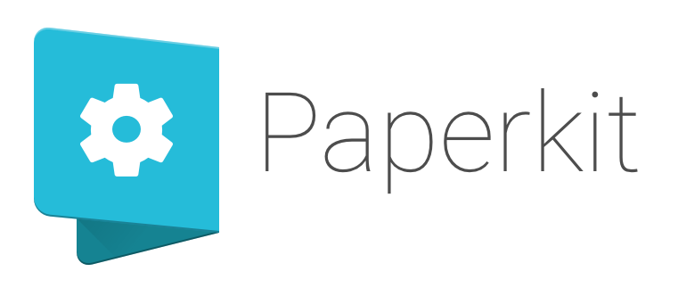

Paperkit referenceComponentsAttributesAPIsMDCSSHelp
LearnReferenceDevelopShowcaseWelcome to the Paperkit reference page! Thanks for your interest in our framework.
Please remember Paperkit is still an alpha version. This means it is in active development and not ready for production. We love feedback, drop us a line at feedback@paperkit.org.Any questions? Wanna tell us something? Go ahead! We will answer you directly.